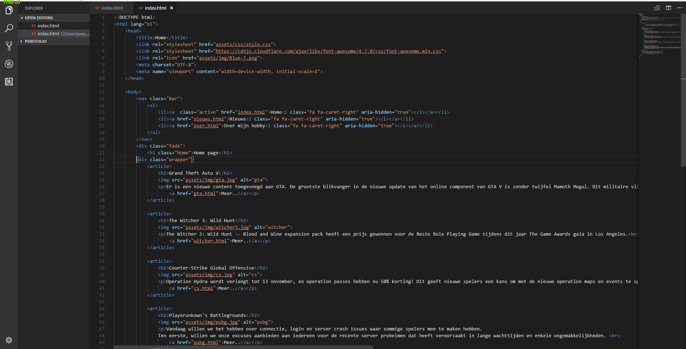
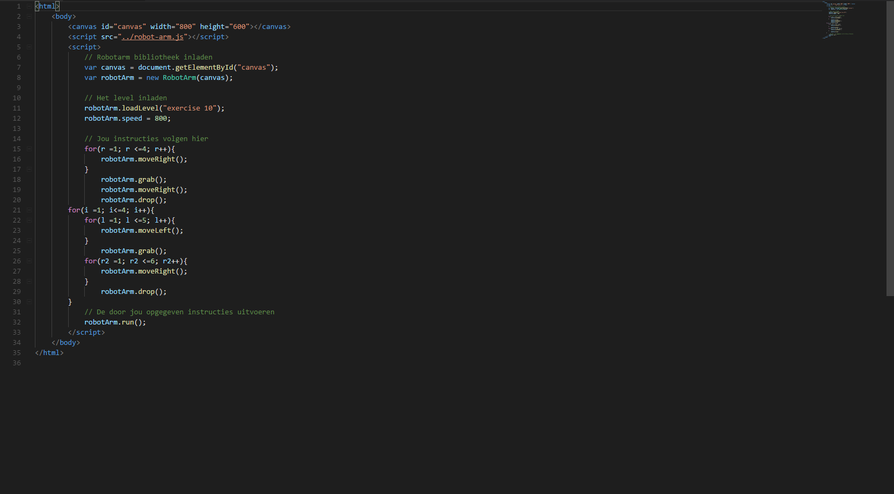
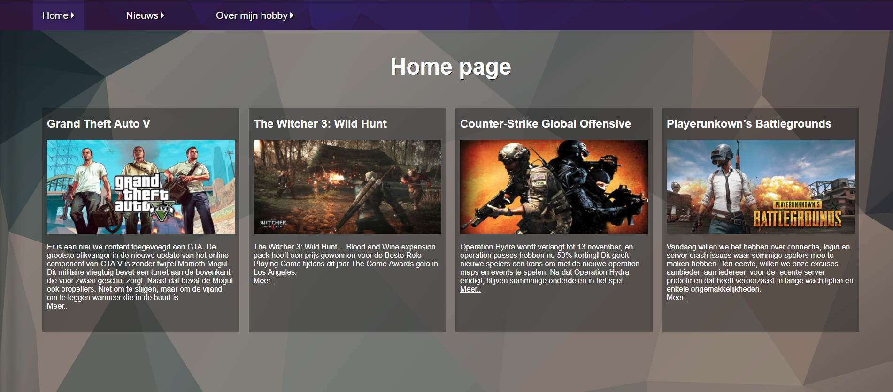
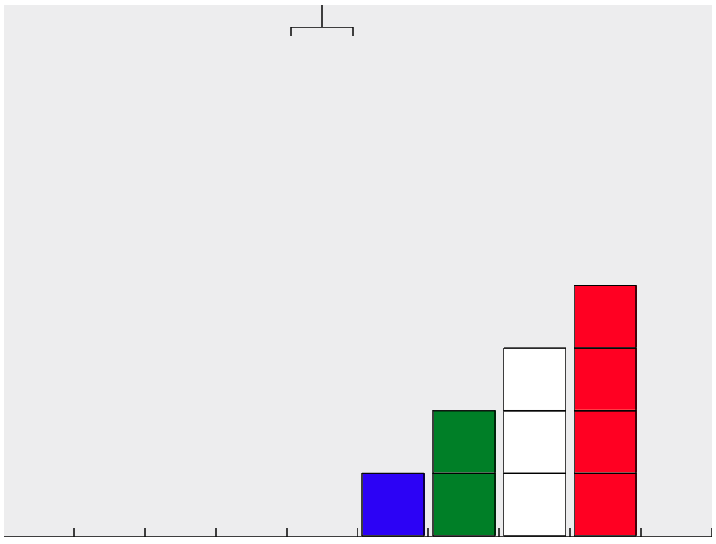

Informatie
Mijn naam is Joey de Klerk
- Voornaam: Joey
- Achternaam: de Klerk
- Leeftijd: 16 jaar
- Woonplaats: Dordrecht
- Opleiding: ApplicatieOntwikkelaar
- Diploma: VMBO-TL

Mijn naam is Joey de Klerk

HTML
Rond augustus 2017 heb ik mijn eerste opdracht van HTML gekregen. Het daarvoor in 2016 heb ik al een keer met HTML gewerkt op een meeloop dag. De eerste opdracht vond ik zelf nog gemakkelijk gaan omdat ik al een klein beetje wist hoe het werkte. Nu weet ik hoe HTML werkt en kan ik gemakklijk dingen laten zien op een webpaginas. Ik weet nu hoe websites gemaakt zijn.
CSS
Rond augustus 2017 heb ik samen met mijn eerste HTML opdracht ook een CSS opdracht gekregen. Met CSS heb ik mijn websites mooi gemaakt en kopjes op een mooie plek gezet. Dit was ook de eerste keer dat ik met CSS ging werken. Op dit moment weet ik hoe CSS werkt en kan ik mooie en professionele websites maken.

Javascript
Mijn eerste opdracht van Javascript was robotarm. Deze opdracht vond ik bij het begin erg makkelijk alleen daarna werd het moeilijker. Ik weet nog niet heel veel van Javascript dus maar een klein beetje. In de toekomt hoop ik meer te leren van Javascript
Photoshop
Thuis werk ik soms met Photoshop op logo's te maken voor mijn accounts zoals github en mijn emails. Dit vindt ik leuk om te doen en ik ken nu wel de basis van Photoshop.


Wie ben ik
Aan het begin van het jaar hebben we een opdracht gemaakt genaamd: Wie ben ik. Hierbij moesten we informatie of onszelf geven met onze hobby's. Dit was mijn eerste HTML/CSS opdracht die ik heb gemaakt. Zlef vond ik deze opdraht zeer gemakkelijk omdat ik HTML en CSS al snel begreep.
Layout
De layout was de 4de opdracht van HTML/CSS dat we moesten maken. Daarin moesten we informatie geven over onze hobby's. De positionering moesten we doen met de Flex box. Dit is een van de beste websites die ik heb gemaakt met html/css.
RobotArm
Robotarm was mijn eerste Javascript opdracht. Met deze opdracht zorgde ik ervoor dat een arm een blokje op pakt en dan verplaatst naar een andere plek. Er zaten ook opdrachten dat we bijvoorbeeld maar 1 kleur moeten verplaatsten en de rest niet. Deze opdracht vond ik bij het begin wel moeilijk alleen toen ik het snapte vond ik het wel makkelijk.
